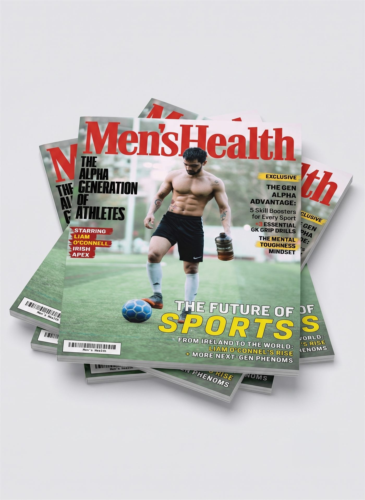
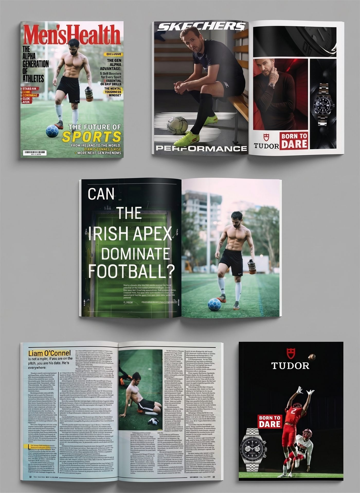

Men's Health Magazine
A magazine cover and layout concept built around a fictional feature story on a rising athlete. I wanted the cover to feel like it could actually sit on a newsstand next to the real thing, then carried that same energy into the ad pages and editorial spreads inside.

Inside the Issue

Reflection
This project made me think a lot about hierarchy on a cover, since there is so much competing for attention between the logo, the cover lines, the athlete, and the exclusive tags. I kept comparing mine against real issues on a newsstand to make sure it did not feel over designed.
If I came back to this, I would build out a few more interior spreads, since right now the feature story only really lives across two pages and could use more room to breathe.